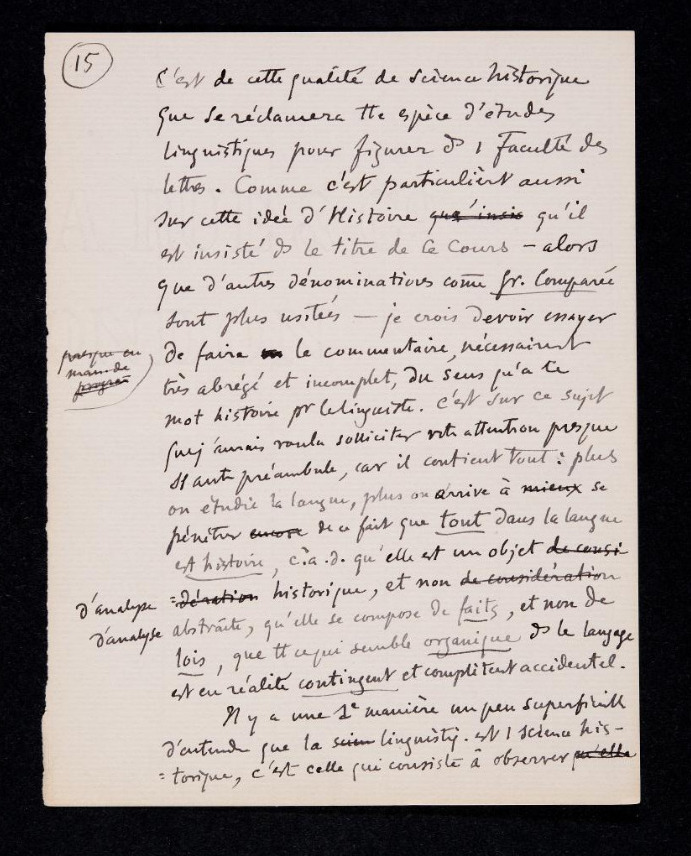
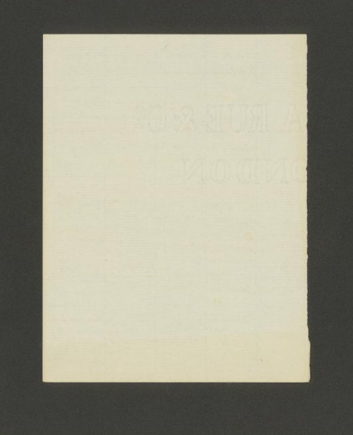
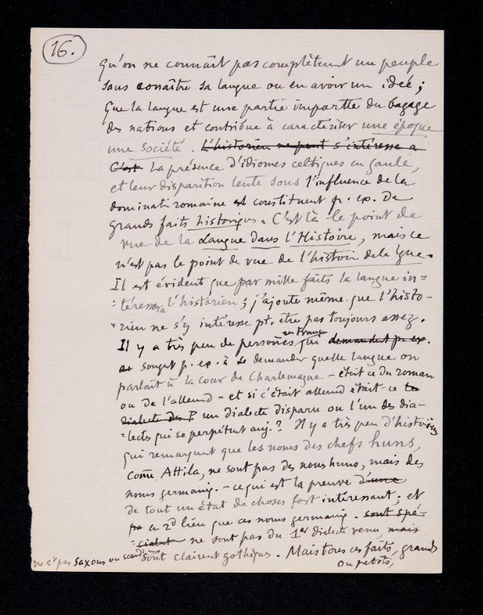

Il manoscritto è stato scritto da
Ferdinand de Saussure. Sono gli appunti delle
prime tre conferenze che tenne
all'Università di Ginevra
per il corso di fonetica del greco e del latino del
13 novembre 1891.
Il documento è stato acquisito dalla
Bibliothèque de Genève.
È possibile consultare il manoscritto codificato presso l'archivio online dell'
Università di Pisa.
Fruizione:
Opera ad accesso libero.
Materiale e supporto
Materiale e dimensione:
Fogli di
carta
30 + 15 + 22 pagine + 1 foglietto. Il manoscritto si presenta in buone condizioni,
nonostante i segni del tempo.
Lo si nota sia dal colore ingiallito delle pagine, ma anche dai bordi consumati o
mancanti in alcuni punti.
Il testo è comunque ben visibile, nonostante l'inchiostro sia a tratti sbiadito.
In alcuni fogli ci sono cancellature, annotazioni a lato e correzioni.
Caratteri:
Scritto in corsivo, non sempre di facile comprensione poichè si tratta di appunti
scritti a mano.
Alcune parole sono sottolineate e altre cancellate,
ci sono delle note a margine e alcune parole sono scritte con colori diversi come
rosso e blu.
Lunghezza:
Le pagine si alternano tra quelle vuote e quelle che hanno in media 30 righe.
Collocazione
Testi registrati nella Biblioteca di
Ginevra,
Svizzera.
Novembre 1891.
Identificativo:
BGE Ms.fr.3951/1.1-3
Pagina 15

C’est de cette qualité de science historique
que se réclamera toute espèce d’études
linguistiques pour figurer dans une Facultè des
Lettres.
Comme c’est particulièrement aussi
sur cette idée d’histoire qu è 'il insie
qu’il
est insisté dans le titre de ce c ours alors
que d’autres dénominations comme comparée
sont plus usitées je crois d evoir essayer
de faire le commentaire, nécessairement
très abrégé et incomplet, du sens qu’a ce
mot histoire pour le linguiste.
C’est sur ce sujet
que j’aurais voulu solliciter votre attention presque
sans autre préambule, car il contient tout :plus
on étudie la langue , plus on arrive à mieux se
pénétrer de ce fait que tout dans la langue
est histoire ,
qu’elle est un objet de cousi d’analyse historique de'retion , historique, et non d' considèration
analyse abstraite, qu’elle se compose de faits , et non de
lois , que tout ce qui semble organique dans le langage
est en réalité contingent et complètement accidentel. Il y a une première manière un peu superficielle
d'entendre que la linguistique est une science his
torique c'est celle qui consiste à observer [...]
Traduzione in italiano
È a tale qualità di scienza storica che farà
riferimento ogni specie di studio linguistico per figurare in una Facoltà di Lettere.
Giacché è su quest’idea di storia che s’insiste particolarmente nell’intitolazione
di questo corso -
sebbene altre denominazioni, come Grammatica comparata,
siano più usate - credo di dover provare a fare un commento, necessariamente molto
risicato e incompleto, sul senso che ha questa parola, 'storia’,
per il linguista. È su questo argomento che avrei voluto sollecitare la vostra attenzione,
senza quasi altro preambolo,
perché esso ricomprende tutto: più si studia la lingua, più si arriva a prendere coscienza
del fatto che tutto nella lingua è storia, cioè che essa è un oggetto di analisi storica,
e non di analisi astratta, che si compone di fatti, e non di leggi, che tutto ciò
che sembra organico nel linguaggio è in realtà contingente e completamente accidentale.
C’è un primo modo, un po’ superficiale, d’intendere l’idea che la linguistica sia
una scienza storica, ed è quello che consiste nell’osservare [...]
Pagina vuota

Pagina 16

qu'on ne connaît pas complètement un peuple
sans connaître sa langue ou en avoir une idée;
que la langue est une partie importante du bagage
des nations et contribue à caractériser une époque ,
une société. La présence d'idiomes celtiques en Gaulle
et leur disparition lente sous l'influence de la
domination romaine constituent de
grands faits historiques.
C'est là le point de
vue de la Langue dans l' Histoire , mais ce
n'est pas le point de vue de l'histoire de la langue.
Il est évident que par mille faits la langue in
teresserà l' historien ; j'ajoute même que l' historien
ien ne s'y intéresse etre pas toujours assez.
Il y a très peu de personnes en France qui songent à se demander quelle langue on
parlait à la cour de Charlemagne était-ce du roman
ou de l'allemand - et, si c'était l'allemand, était-ce
un dialecte disparu ou l'un des dia
lectes qui se perpétuent aujourd'hui ?
Il y a très peu d' historiens
qui remarquent que les noms des chefs
comme Attila , ne sont pas des noms Huns, mais des
noms germaniques, - ce qui est la preuve
de tout un état de choses fort intéressant;
et
en lieu que ces noms germaniques ne sont pas du dialecte venu ne sont pas saxons ou Scandinaves, mais sont clairement gothiques.
Mais tous ces faits , grands
ou petits, [...]
Traduzione in italiano
d’intendere l’idea che la linguistica sia una scienza
storica, ed è quello che consiste nell’osservare che non si conosce completamente un popolo senza
conoscerne la lingua, o almeno averne un’idea; che la lingua è una parte importante del bagaglio delle
nazioni e contribuisce a caratterizzare un’epoca, una società. La presenza di idiomi celtici in Gallia, e
la loro lenta sparizione sotto l’influenza della dominazione romana costituiscono, per esempio,
grandi fatti storici.
Quello è il punto di vista della Lingua nella Storia, ma non è il punto di vista della
Storia della lingua.
È evidente che per mille fatti la lingua interesserà lo storico; e aggiungo pure che
forse lo storico non se ne interessa sempre quanto dovrebbe.
Ci sono pochissime persone in Francia, che badino, per esempio, a chiedersi quale
lingua si parlasse alla corte di Carlo Magno -
se fosse romanzo o germanico - e, se fosse germanico, se era un dialetto sparito o
uno dei dialetti che si perpetuano ancora oggi?
Ci sono pochissimi storici che notino che i nomi dei capi Unni, come Attila, non sono
nomi unni, ma germanici, -
il che è la prova di tutto uno stato di cose parecchio interessante;
e in secondo luogo che questi nomi germanici non sono del primo dialetto, non sono
sassoni o scandinavi, ma sono chiaramente gotici.
Ma tutti questi fatti, grandi o piccoli, [...]
Elementi terminologici
SCIENZA STORICA: Le scienze ausiliarie della storia sono discipline scientifiche che
aiutano a valutare e utilizzare le fonti rilevanti per il lavoro storico e la scrittura
della storia.
STORIA: Esposizione ordinata di fatti e avvenimenti umani del passato, quali risultano
da un’indagine critica volta ad accertare sia la verità di essi, sia le connessioni
reciproche per cui è lecito riconoscere in essi un’unità di sviluppo.
LINGUA: La lingua è il sistema o forma storicamente determinata attraverso il quale
gli appartenenti a una comunità si esprimono e comunicano tra loro attraverso l'uso
di un determinato linguaggio ovvero un insieme di segni scritti (simboli) e/o parlati
(suoni).
OGGETTO DELL'ANALISI STORICA: Ogni testo, oggetto o manufatto da cui si può ricavare
una conoscenza del passato.
ANALISI STORICA: Scomposizione di un tutto, astratto, nelle parti che lo costituiscono,
soprattutto a scopo di studio.
FATTI: Avvenimento, azione, fenomeno, ciò che si compie o si è compiuto.
LEGGI: Norma o insieme di norme che regolano il comportamento etico e sociale degli
uomini: seguire, infrangere la legge.
ORGANICO: Che si riferisce a, o ha rapporto con, gli organismi viventi, animali o
vegetali.
LINGUAGGIO: La capacità e la facoltà, peculiare degli esseri umani, di comunicare
pensieri, esprimere sentimenti, e in genere di informare altri esseri sulla propria
realtà interiore o sulla realtà esterna.
CONTINGENTE: Che tocca, tangente, necessario.
ACCIDENTALE: Che accade per caso, fortuito, casuale: fatto, circostanza; che s’incontra
per caso o raramente, non abituale.
LINGUISTICA: Che riguarda la lingua, il linguaggio, come fatto sociale, o particolari
aspetti, caratteri e manifestazioni della lingua.
EPOCA: Periodo storico collegato a grandi avvenimenti.
IDIOMA: Lingua propria e particolare di una nazione.
STORICO: Scrittore di storia, di opere storiografiche.
STORIA DELLA LINGUA: Storia dello sviluppo della lingua di un popolo.
DIALETTO: Il dialetto è un sistema linguistico adoperato in un ambito geografico limitato.
ATTILA: Condottiero e sovrano unno dal 434 fino alla sua morte. Viene considerato
come uno dei sovrani più potenti del mondo e della storia tardo antica.
STATO DELLE COSE: Condizione delle situazioni.
Bibliografia
Ferdinand De Saussure, Tullio De Mauro, Alessandro Chidichimo, Corso di linguistica generale, Traduzione commento e note di T. De Mauro.
Cahiers
Ferdinand De Saussure Bari- Roma- Ginevra - 1976 2009.